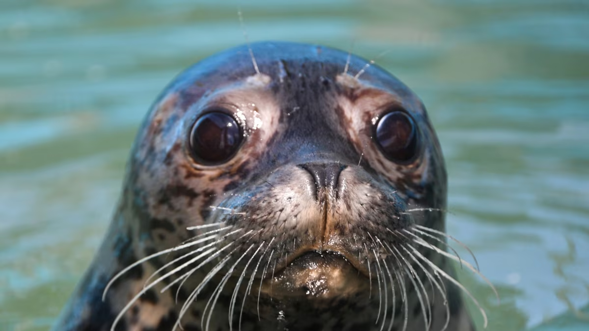
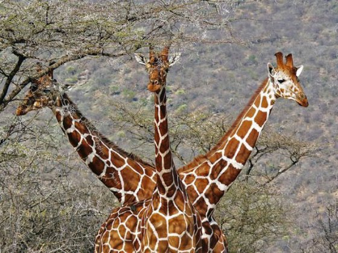
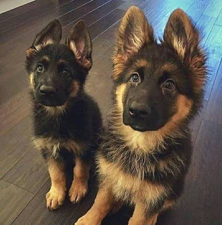

ზოგადი სახელწოდება და ქვეოჯახი. სქესმწიფე მამლის სიგრძე 2-3,6 მ აღწევს, წონა 200-1250 კგ-მდე, დედლისა — 1,8-2,8 მ, 90-400 კგ. სხეული დაფარული აქვთ თითქმის ერთფეროვანი (ღია რუხიდან ყავისფრამდე) ბალნით. ხუთივე სახეობა სხვადასხვა გვარს ეკუთვნის. გავრცელებული არიან ჩრდილოეთ ნახევარსფეროში — კალიფორნიიდან მექსიკამდე, გალაპაგოსის კუნძულებთან და იაპონიის ზღვაში, აგრეთვე სამხრეთ ნახევარსფეროში.

ჟირაფისებრნი მცოხნელი ძუძუმწოვრების ოჯახი წყვილჩლიქოსნების რიგისა. აერთიანებს 2 გვარის 2 სახეობას: ჩვეულებრივ ჟირაფსა და ოკაპს. ჩვეულებრივი ჟირაფის (Giraffa camelopardalis) სიმაღლე 5-6 მეტრს, მასა 550-1800 კგ აღწევს. აქვს მოკლე სხეული, გრძელი მაღალი კისერი, პატარა თავი, დიდი თვალები, მოკლე და ვიწრო ყურები, პატარა რქები. არეალის სხვადასხვა საზღვრებში შეფერილობა ცვალებადია და ამის გამო ჟირაფის რამდენიმე ქვესახეობას გამოყოფენ. გავრცელებულია აფრიკაში საჰარის სამხრეთით. ბინადრობს სავანეებში. ქმნის მცირე ჯგუფებს, რომლებიც 12-15 (ზოგჯერ 70-მდე) სულისაგან შედგება. აქტიურია დღისით. იკვებება აკაციის ფოთლებით და ტოტებით. აქვს კარგი მხედველობა და სმენა. მაკეობა 420-450 დღეს გრძელდება

გამარჯობათ მე ვარ მათე მამლიკიძე და ვსწავლობ გოას აკადემიაში ძალიან მომეწონა ეს აკადემია რადგან აქ მარტო პროგრამირებას არ ასწავლიან აქ დისციპლინას და ქცევებს და ხო ჩემზე დავწერო ეხა როგორც ვთქვი მე ვარ მათე მამლიკიძე ძალაინ მიყვარს კალათბურთი და ხო რავი მეტი რა დავწერო:/
ეს ანიმაციური ფილმი ბავშობიდანაა მომწონს და ძალიან მაგარია რათქმაუნდა საჭმელთან კავშირშია რომელიც ძალიან მიყვარს ასევე ეს ფილმი ძალიან კრეატიულია და მომწონს თქვენ გირჩევდით ამის ყურებას

დღევანდელი სახით გერმანული ნაგაზი გამოიყვანა მაქს ფონ შტეფანიცმა XIX საუკუნის ბოლოს. ვიურტემბერგის, ტიურინგის და ბავარიის მეცხვარე ძაღლების შეჯვარებით ფონ შტეფანიცმა მიიღო ლამაზი, ფხიზელი, დამჯერი გერმანული ნაგაზი. 1915 წლამდე გამოფენებზე გამოჰყავდათ როგორც გრძელბალნიანი, ასევე მოკლებალნიანი ნაგაზები. დღესდღეობით უმეტეს ქვეყანაში გამოფენაზე დაიშვება მხოლოდ მოკლებალნიანი ნაგაზი. მნიშვნელობა აქვს ბალნის შეფერილობასაც. გამოფენაზე დაიშვება შავი-წითური, შავი-ნაცრისფრით და შავი შეფერილობის ძაღლები. ზოგიერთ ქვეყანაში აკრძალულია ყვითელი და კრემისფერი სახესხვაობები. ჯერ კიდევ ისტორიკოსი ტაციტი წერდა "მგლის მსგავს ძაღლზე რეინის მიმდებარე მიწებიდან". სრულებით შესაძლებელია, რომ გერმანული ნაგაზი და მისი ახლომონათესავე ჰოლანდიური და ბელგიური ნაგაზები დღევანდელი სახით ჯერ კიდევ ათასი წლის წინ არსებობდნენ. პირველი მსოფლიო ომის დასაწყისისთვის გერმანული ნაგაზი ძალიან პოპულარული გახდა გერმანიაში და მალე მთელ მსოფლიოში გავრცელდა.
